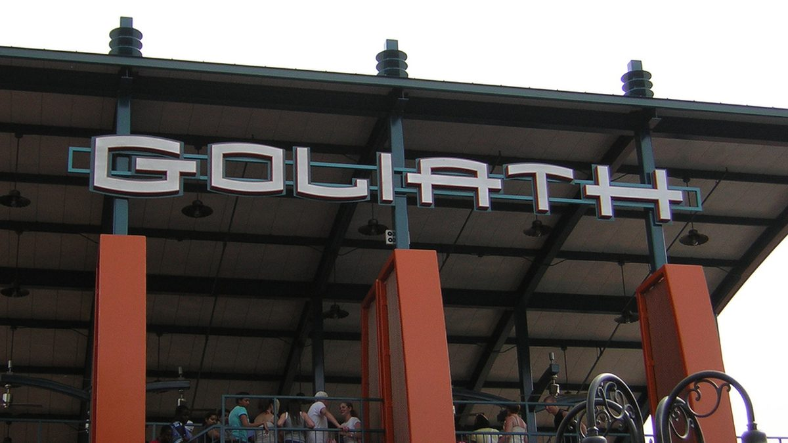

Six Flags cierra nueve montañas rusas tras la muerte de un hombre en una caída en Georgia
La empresa cerró el martes montañas rusas hipercoaster similares en seis parques, un día después de que la policía dijera que un pasajero de 42 años salió despedido de la montaña rusa Goliath en Six Flags Over Georgia y golpeó a otros visitantes al caer.

Puntos clave
- Actualizado a las 20:58 UTC, 24 de octubre de 2026.
- Actualizado a las 06:28 UTC, 17 de octubre de 2026.
- Six Flags cerró nueve montañas rusas en seis de sus parques el martes, un día después de que un hombre muriera al caer de una montaña rusa en Six Flags Over Georgia, en las afueras de Atlanta.
Actualizado a las 20:58 UTC, 24 de octubre de 2026. Six Flags instalará cinturones de seguridad en la montaña rusa Goliath de Six Flags Over Georgia y en otras montañas rusas que usan un sistema de sujeción similar, dijo la compañía el viernes, menos de dos semanas después de que Hassan Jihad Ibn Kariem, de 42 años, saliera despedido de Goliath y muriera. El presidente y director ejecutivo, John Reilly, dijo que la compañía está reforzando las medidas de seguridad en sus parques, en un comunicado recogido por USA Today y The Associated Press. Reilly dijo que Six Flags también ha contratado a ingenieros independientes y especialistas en inspección de atracciones para revisar los procedimientos de seguridad en todas sus atracciones. Goliath sigue cerrada a la espera de revisiones y autorizaciones de seguridad, y las otras ocho montañas rusas de cinco parques de Estados Unidos y Canadá que comparten el mismo fabricante y un sistema de sujeción tipo concha similar permanecen cerradas. Los investigadores no han dicho qué causó que Kariem saliera del vagón.
Actualizado a las 06:28 UTC, 17 de octubre de 2026. Six Flags Over Georgia reabrió el viernes 16 de octubre, tras cuatro días cerrado por la muerte de Hassan Jihad Ibn Kariem, de 42 años, el lunes 12 de octubre. La montaña rusa Goliath, de la que cayó Kariem, sigue cerrada de forma temporal y con candado, dijo el presidente del parque, Richard Pretlow, en un comunicado recogido por USA Today. El parque también cambió el nombre de su espectáculo de Fright Fest: Dr. Fright's Dead Man's Party se llama ahora Dr. Fright's Party, por respeto a la familia de Kariem, según el parque a USA Today, en una nota del New York Post el viernes. Joshua Nelson, padre de la sobrina de 13 años de Kariem, dijo el jueves a WSB-TV que su hija, sentada junto a Kariem, contó que él se desmayó antes de que su cierre se soltara y cayera. La Oficina del Comisionado de Seguros de Georgia dijo que Goliath no tuvo infracciones en su inspección anual obligatoria de marzo, según TMZ. La atracción sigue cerrada hasta que termine la investigación.
Six Flags cerró nueve montañas rusas en seis de sus parques el martes, un día después de que un hombre muriera al caer de una montaña rusa en Six Flags Over Georgia, en las afueras de Atlanta.
La policía del condado de Cobb identificó al hombre como Hassan Jihad Ibn Kariem, de 42 años, de Atlanta. En un comunicado, la policía dijo que la información inicial de testigos y empleados indica que Kariem salió despedido de la atracción, golpeó a otros visitantes y cayó debajo de la estructura. Las emisoras de Atlanta WSB y 11 Alive informaron de que cayó de la montaña rusa Goliath y de que otras cuatro personas resultaron heridas.
Responsables del parque dijeron a The New York Times y The Associated Press que los cierres son temporales y se hicieron por precaución. Las nueve atracciones tienen un diseño similar al de la montaña rusa de Georgia, una hipercoaster que alcanza una velocidad máxima de 70 mph y una altura máxima de 200 pies, según Six Flags. Goliath abrió en 2006.
Qué atracciones están cerradas
Según The New York Times, las montañas rusas cerradas son:
- Raging Bull en Six Flags Great America en Illinois
- Goliath en Six Flags Magic Mountain en Valencia, California
- Nitro en Six Flags Great Adventure en Jackson Township, Nueva Jersey
- Leviathan y Behemoth en Canada's Wonderland en Vaughan, Ontario
- Fury 325 y Thunder Striker en Carowinds en Charlotte, Carolina del Norte
- Orion y Diamondback en Kings Island en Ohio
La empresa no ha dicho cuánto tiempo permanecerán cerradas las atracciones ni qué revisarán los inspectores antes de que reabran. La policía del condado de Cobb sigue investigando cómo salió Kariem de la atracción.
Fuentes
Fuentes
- USA Today: Six Flags closes multiple roller coasters similar to one linked to Georgia park death
- Rockford Register Star: Six Flags closes Illinois coaster similar to one linked to Georgia death
- USA Today: Six Flags Over Georgia to open Friday after man's roller coaster death
- New York Post: Georgia Six Flags renames Dead Man's Party Fright Fest after teacher fell to his death from ride
- New York Post: Harrowing final moments of Six Flags parkgoer Hassan Kariem who fell to his death riding Goliath roller coaster
- USA Today: Six Flags: Seat belts to be added to ride after fatal Georgia incident
- Associated Press via Scripps News: Six Flags says it will install seat belts on roller coaster after rider's death
- CNN: Six Flags signals Goliath roller coaster will reopen, with seat belts, after fatal fall at Georgia park